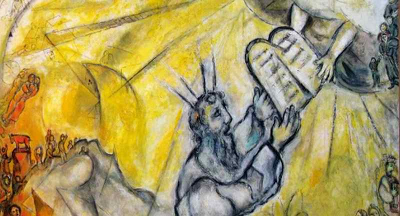
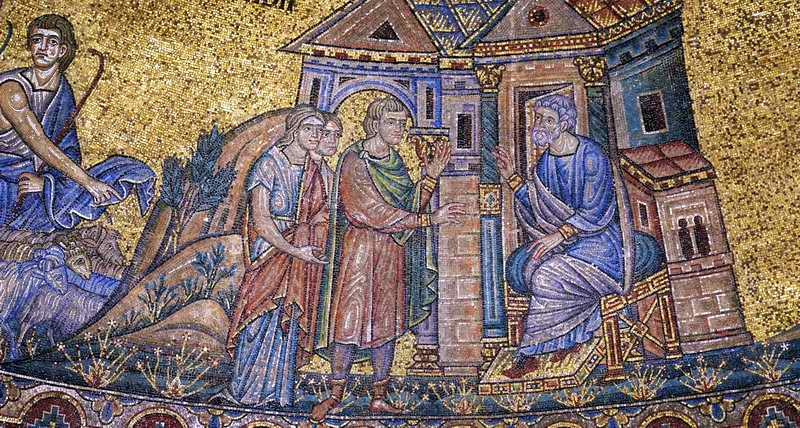

Music and Torah
Following an ancient tradition, the Israeli composer Daniel Kruglov made an audio recording every week for a year of his interpretation of, and reflection on, the weekly Torah reading.

As is well known, Jewish tradition divides the whole text of the Torah into weekly readings so that the full annual cycle of readings in the synagogues is completed within a year, finishing the whole text of the Torah by the end of the year. So in all the synagogues of the world, at one and the same time, people read and reflect on, interpret and explore one and the same passage of the books of Moshe, coming to know the wisdom of the Most High.
Daniel Kruglov, Israeli composer, performer and improviser, reads each weekly portion in a special way. Following the ancient tradition, every week for a year Daniel recorded his interpretation of and reflection on the weekly reading. In a year of such reading a complete cycle of musical interpretations was created: fifty-four improvisations in all.
DANIEL KRUGLOV: a musical reflection on the weekly Torah portion (Bereshit / Gen. 37:1–40:23).
Music is a special language; with its help one can express what cannot be expressed by other means. Daniel looks in a passage of Scripture for what awakens an emotional response in him. Then he formulates his impressions and thoughts in notes.
God by no means always speaks to man in plain words. And we ourselves cannot explain everything in words. For example, we cannot explain what cold is, or what taste is. These simply have to be felt. In the same way, in Scripture we can sense certain experiences that are hard to put into words. It is precisely this, what he has lived through in contact with the text of Scripture, that Daniel conveys through music.
Music can express the impulses of the soul, the emotional states inherent in the Torah. Emotions and feelings are a very important part of the human soul. That is how the Most High created us. And from the beginning He planned to speak to us through our feelings, using the capacity He Himself placed in us to perceive on the emotional level.
For the composer Daniel Kruglov the Torah is full of music. And since music is an abstract art with no single concrete interpretation, it can serve, as Daniel says, as a special tool for knowing the text. It is precisely the abstract nature of music that allows him, as an artist, to share his revelation without imposing his judgement on others. Through music the listener can be prepared and guided towards a certain perception of the text of the Torah, towards reflection on a particular passage. Yet in his reflections such a person will be quite independent. Music, as it were, can pass on to him the inspiration to reflect.
The Jewish sages distinguish four levels of interpreting the Torah, PARDES: peshat, remez, derash, sod. Tradition also speaks of the seventy faces of the Torah. So, depending on our knowledge, dedication and creative potential, we can go deeper and come to know endlessly. Daniel believes that one can speak of the musical perception of the text of the Torah as one of the levels of interpreting it.
Just as we cannot explain some things in Russian to a person who speaks English, so some things cannot be conveyed in any language other than music. What sometimes cannot be expressed in words can be expressed in the language of music.
So God cannot be explained in words. We can try endlessly to formulate it, but words are still not able to do it. With music one can create an atmosphere in which our perception becomes wider.
One of the weekly Torah portions is called "Yitro" (Jethro; Exod. 18:1–20:26). Yitro was a Midianite priest who was tired of worshipping dead idols and was seeking the true faith. Departing from the faith of his fathers very likely brought him trouble from his own people. I ask Daniel to present an improvisation on this passage. Let us try to reflect and listen to the music of this text.
Was it a spontaneous reaction, or following a certain programme, an attempt to reveal an image?
According to the musician, in this particular case he acted as an illustrator. We do not know in detail what kind of man Yitro was or what he looked like. Nevertheless, there is something in Scripture. What Daniel tried to do was to convey his inner world.

Attempts of this kind at a musical exploration of the sacred texts of the Torah seem very important to me. It would be wonderful to see works by other artists too (not only musicians) who read Scripture through their creative work as no one else can.
The recording of the conversation with Daniel Kruglov, and his instant improvisations, can be seen here:
Authors: Daniel Kruglov, Ephraim Kalish / Torah-Art
See also the next part, "TORAH AND THE LANGUAGE OF MUSIC", and the musical improvisation "THE GIFT OF CREATION" by Daniel Kruglov.
 Ministry in Yaroslavl
Ministry in Yaroslavl A Direct Hit on the Target
A Direct Hit on the Target Contemporary Artists Interpret the Passover Haggadah
Contemporary Artists Interpret the Passover Haggadah